INSTITUTO POLITÉCNICO NACIONAL · ESIME ZACATENCO
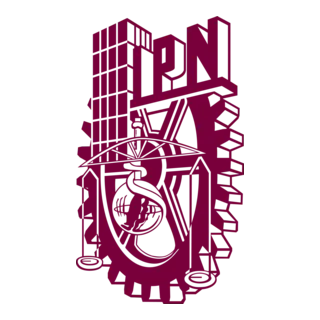
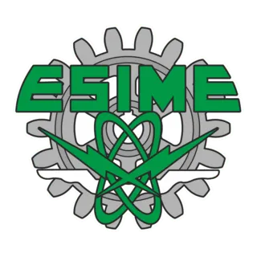
Diseño de un Sistema Automatizado de Adquisición y Visualización de Datos para la Medición y Caracterización de Equipos de Estimulación Magnética Transcraneal (TMS)
Presentan: Pérez Nava Cristián Gonzalo · Silva Hernández Marcopolo
Asesor: Dr. Pedro Martínez Ortiz
Ingeniería en Comunicaciones y Electrónica · Octubre 2026
Instituto Politécnico Nacional
02
Índice
19
Problemáticas y conclusión
Problemáticas del desarrollo (19) y conclusión (20)
2
03
Introducción
05
Problemática
06
Justificación
07
Objetivo general
08
Objetivos específicos
09
Dashboard: monitoreo en tiempo real
10
Dashboard: historial de sesiones
11
Diagrama de flujo del sistema
Completo (11) y en 4 partes (12 a 15)
16
Tecnologías: software
17
Tecnologías: hardware
18
Base de datos
Instituto Politécnico Nacional
03
Introducción
TMS y caracterización
Exige medir el campo magnético (Bx, By, Bz) y los voltajes inducidos en phantoms salinos.
Medición actual
Es secuencial: unas 3 horas por ciclo y sin telemetría.
IoT y Edge Computing
Permiten adquisición concurrente, autónoma y visualización remota.
Propuesta: el SAVD
Combina Raspberry Pi Pico 2W, Raspberry Pi 5, Node.js, MariaDB y React.
3
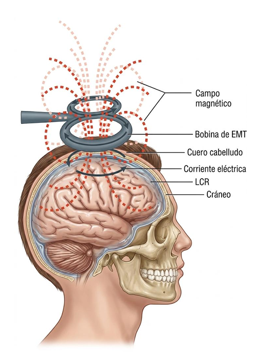
Instituto Politécnico Nacional
04
Introducción
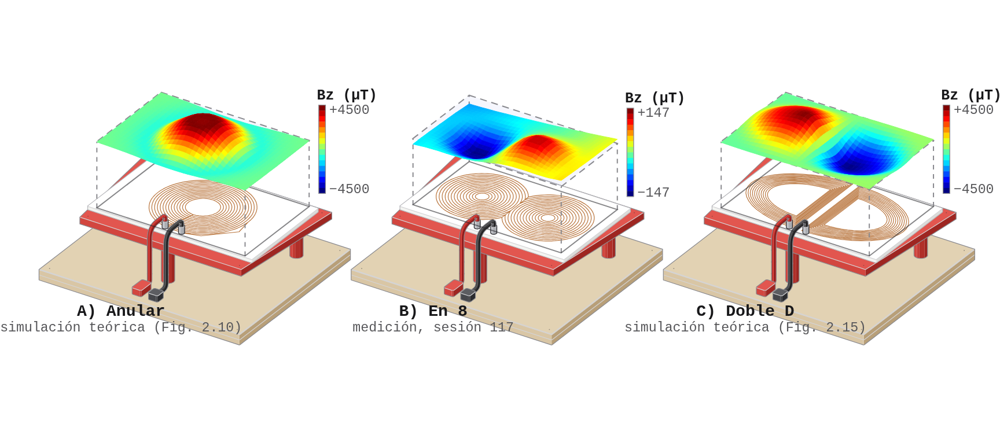
4
Instituto Politécnico Nacional
05
Problemática
Latencia severa
El procesamiento secuencial de Bx, By, Bz toma unas 3 horas y exige supervisión presencial continua.
Sin telemetría en tiempo real
No hay visualización dinámica de vectores; los datos solo se consultan al terminar el barrido.
Datos en silos aislados
Sin base de datos relacional ni interfaz web para gestión, exportación y consulta histórica.
5
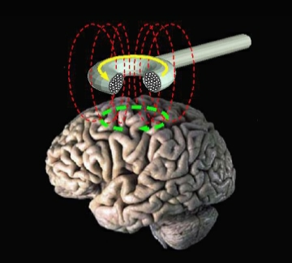
Instituto Politécnico Nacional
06
Justificación
Reducción Cuantitativa de la Latencia (Eficiencia Operativa)
Sustitución del procesamiento secuencial por digitalización concurrente: Se pasa de medir un eje a la vez a capturar simultáneamente las tres componentes
Modernización Tecnológica e Infraestructura Distribuida
Transición de una instrumentación aislada en silo hacia una arquitectura de telemetría distribuida
Servidor central (Raspberry Pi 5) operando bajo Node.js, Express y el patrón MVC, garantizando un procesamiento asíncrono, modular y escalable.
Telemetría y Visualización Dinámica
Dashboard interactivo en React: Elimina los silos de información aislados.
Permite el monitoreo vectorial dinámico en tiempo real a través de la red local y la parametrización remota.
6
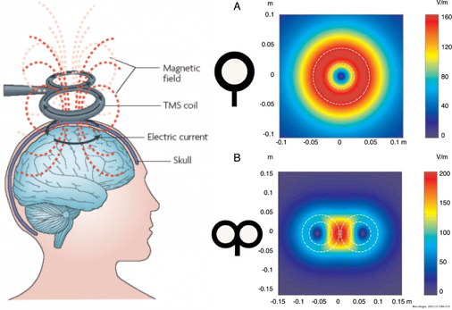
Instituto Politécnico Nacional
07
Objetivo general
Diseñar un Sistema Automatizado de Adquisición y Visualización de Datos con arquitectura IoT para caracterizar equipos TMS sobre modelos físicos, abatiendo la latencia de medición y habilitando la visualización en tiempo real y el barrido autónomo.
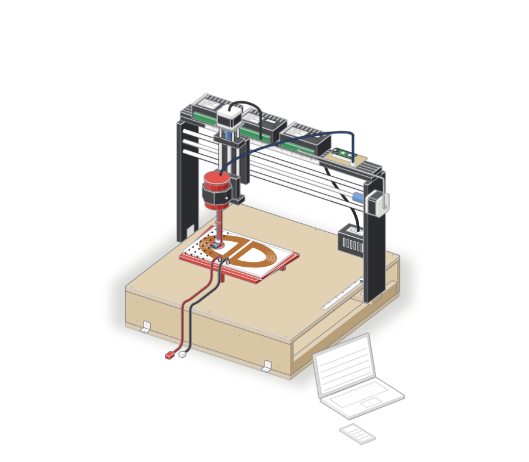
7
Instituto Politécnico Nacional
08
Objetivos específicos
1
Desarrollar el módulo de adquisición concurrente con Raspberry Pi Pico 2W para digitalizar Bx, By y Bz simultáneamente.
2
Diseñar el esquema relacional en MariaDB para almacenar la telemetría con integridad y consultas SQL eficientes.
3
Implementar el backend en Raspberry Pi 5 con Node.js, Express y patrón MVC como nodo central de datos.
4
Construir el frontend en React para renderizar los vectores y la telemetría en tiempo real por la red local.
5
Desarrollar una app móvil multiplataforma para ajustar parámetros y ejecutar el barrido sin supervisión.
8
Instituto Politécnico Nacional
09
Dashboard: monitoreo en tiempo real
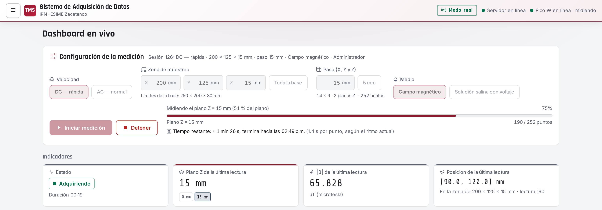
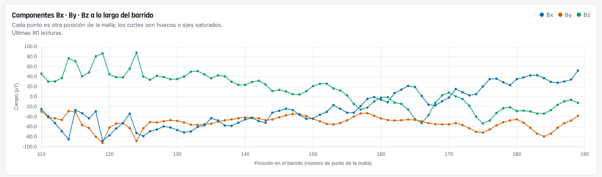
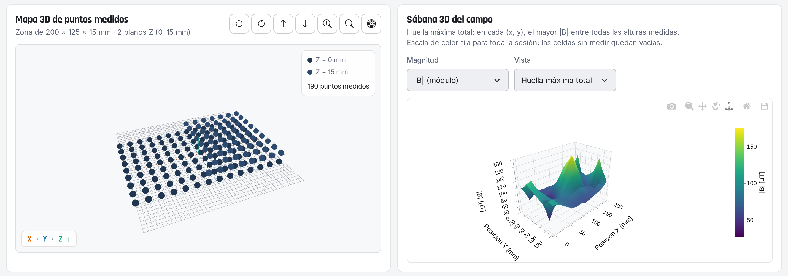
9
Instituto Politécnico Nacional
10
Dashboard: historial de sesiones
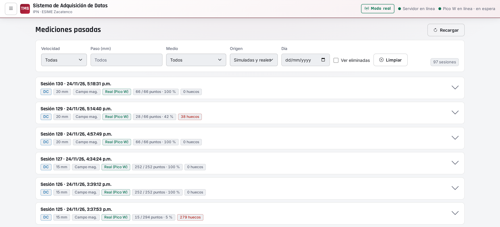
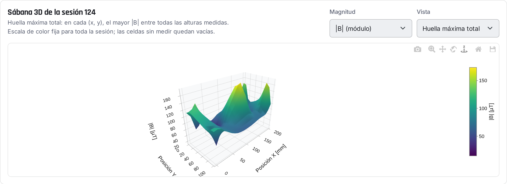
10
Instituto Politécnico Nacional
11
Diagrama de flujo del sistema
11
Instituto Politécnico Nacional
12
Diagrama 1/4 · Entorno físico
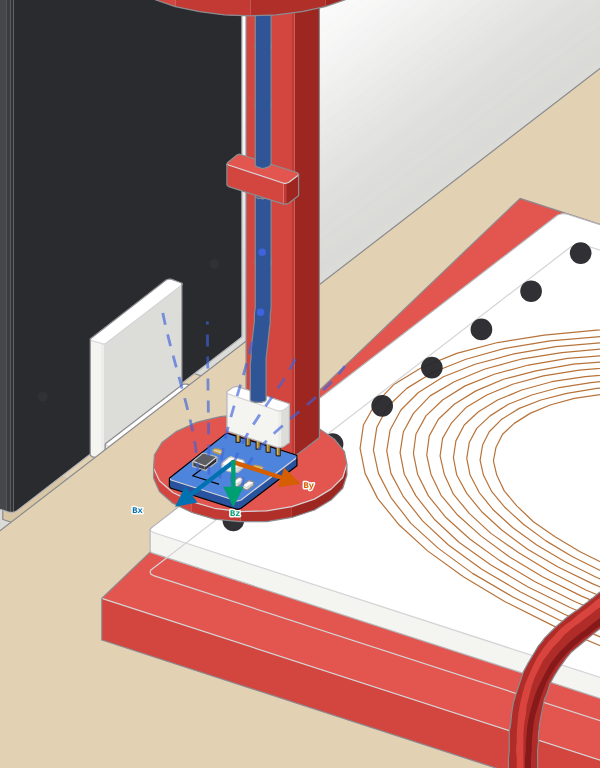
12
Instituto Politécnico Nacional
13
Diagrama 2/4 · Adquisición y envío
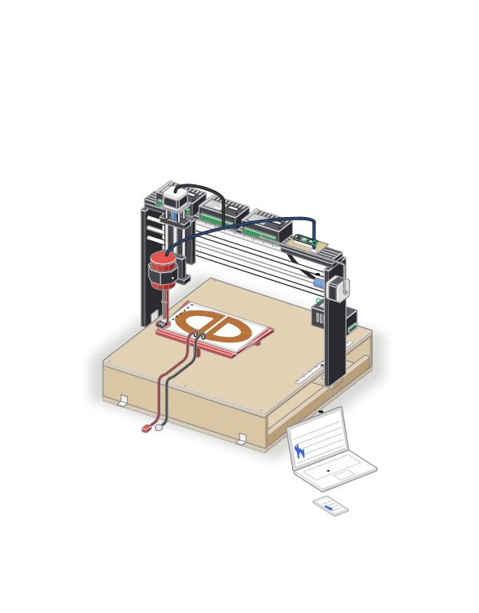
13
Instituto Politécnico Nacional
14
Diagrama 3/4 · Backend y datos
14
Instituto Politécnico Nacional
15
Diagrama 4/4 · Visualización
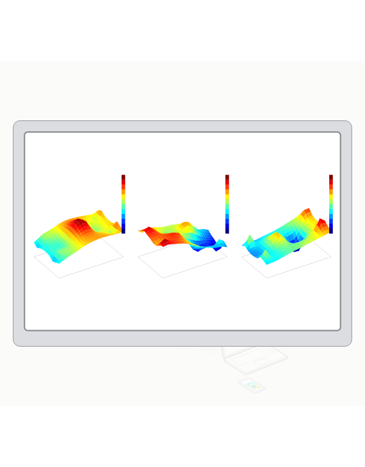
15
Instituto Politécnico Nacional
16
Tecnologías: software
Backend
Node.js y Express (ES Modules, API REST, patrón MVC)
Frontend
React y Vite con Chart.js, Three.js y Plotly; app móvil en React Native (Expo)
Base de datos
MariaDB (InnoDB): 6 tablas relacionadas, transacciones y hora en UTC
Sistema operativo
Raspberry Pi OS (Debian) con Nginx como proxy inverso HTTPS
Firmware
MicroPython con programación orientada a objetos; PIO y DMA para los motores
Comunicación y seguridad
HTTP y JSON sobre Wi-Fi con token, SSE en tiempo real y contraseñas con scrypt
16
Logo
Logo
Logo
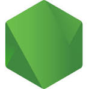
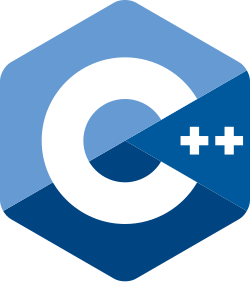
Instituto Politécnico Nacional
17
Tecnologías: hardware
Microcontrolador
Raspberry Pi Pico 2 W (RP2350): Wi-Fi nativo, I2C y PIO
Sensado
Magnetómetro QMC5883P de 3 ejes (Bx, By, Bz) por I2C, rango de ±30 G
Alimentación
Fuentes de 5 V/12 V, cableado y PCB de interconexión
Servidor
Raspberry Pi 5 (8 GB) con disipación activa y SSD
Posicionador 3-DOF
Motores NEMA 17 con drivers TB6600, husillos T8 y rodamientos SC8UU
Equipo existente
Generador y bobinas TMS, osciloscopios y phantoms salinos
17
Logo
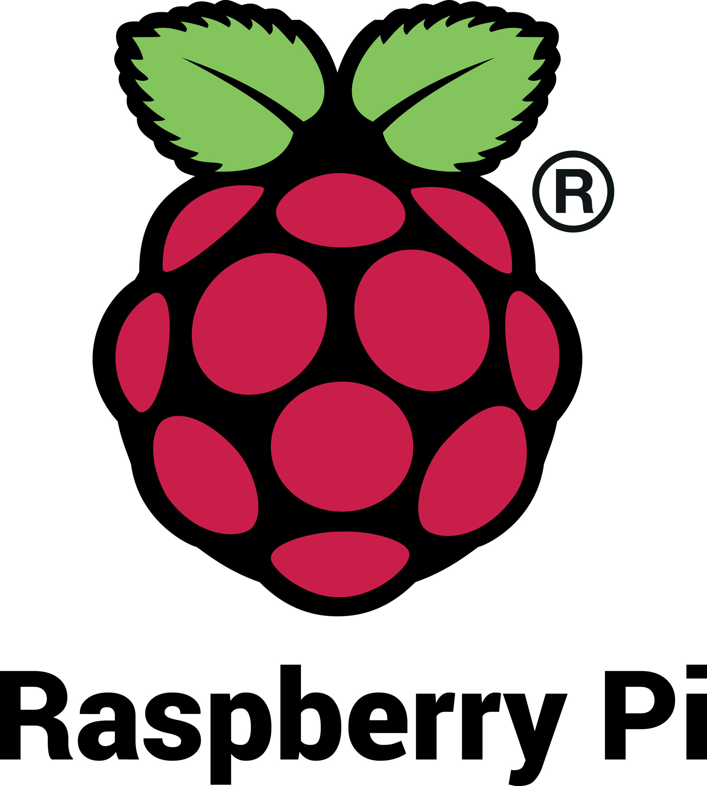
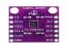
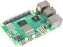
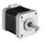
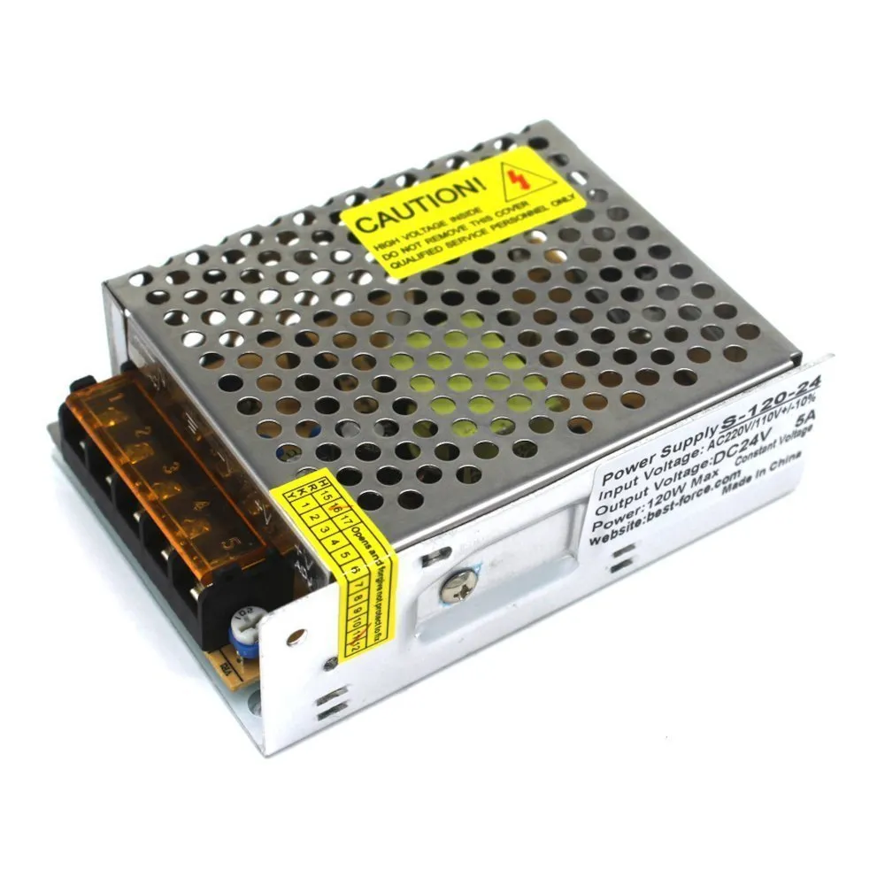
Instituto Politécnico Nacional
18
Base de datos
Diagrama entidad-relación
Seis tablas relacionadas
usuarios: cuentas con rol (admin, operador u observador).
sesiones_login: accesos abiertos; el token se guarda como hash.
sesiones: cada barrido: zona, paso, medio, origen y copia de la configuración.
mediciones: posición, Bx, By, Bz y |B| en µT, cuentas crudas y hora UTC; seq único por sesión.
configuracion: parámetros del sistema en JSON.
dispositivos: la Pico 2 W: token, último latido y firmware.
18
Instituto Politécnico Nacional
19
Problemáticas en el desarrollo
Sensor mal identificado
Problema: Se vendía como HMC5883L y nunca respondió: era un QMC5883P (I2C 0x2C).
Solución: Se identificó por I2C y se adaptaron el firmware y el servidor.
Reinicios a mitad de la medición
Problema: La Pico se reiniciaba y perdía el USB durante el barrido.
Solución: Se rehízo el cableado de tierras del shield.
La Pico 2 W se colgaba al detener
Problema: El firmware abortaba el DMA en la dirección del RP2040, no la del RP2350.
Solución: El firmware detecta el chip y usa la dirección correcta.
Apagones al previsualizar la bobina
Problema: Unas 6 peticiones Wi-Fi por segundo saturaban la Pico.
Solución: Envío limitado a una petición por segundo.
Escala de los rieles al doble
Problema: 400 mm en pantalla eran 200 mm reales en la mesa.
Solución: Corrección ×2 en la interfaz; la Pico no cambia.
Apagones esporádicos de la Pico 2 W
Problema: A veces se apaga sola durante el uso.
Estado: En estudio: alimentación, contactos y ruido de los drivers.
19
Instituto Politécnico Nacional
20
Conclusión
Se cumplió el objetivo general: el SAVD barre, mide y muestra en tiempo real el campo de la bobina, de forma autónoma y con arquitectura IoT.
✓
1. Módulo de adquisición con la Pico 2 W: Bx, By y Bz a la vez con el QMC5883P, sobre la mesa de 3 ejes.
✓
2. Esquema relacional en MariaDB: sesiones, mediciones y configuración, con integridad y sin duplicados.
✓
3. Backend en la Raspberry Pi 5 con Node.js, Express y MVC como nodo central de datos.
✓
4. Frontend en React: Bx, By, Bz, mapa 3D y sábana 3D en tiempo real por la red local.
✓
5. App móvil: parámetros, inicio del barrido y seguimiento sin supervisión.
Barrido real más grande: 777 puntos en 9,4 min (sesión 113).
20